Продолжаем изучать соотношения. В данном уроке мы познакомимся с пропорцией.
Что такое пропорция?
Пропорцией называют равенство двух отношений. Например, отношение
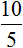
равно отношению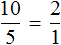
Данная пропорция читается следующим образом:
Десять так относится к пяти, как два относится к одному
Дроби, из которых составлена пропорция, всегда равны. Например, если в пропорции выполнить деление в обеих дробях, то получится число 2 в обеих частях:
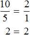
Предположим, что в классе 10 девочек и 5 мальчиков
Запишем отношение десяти девочек к пяти мальчикам:
10 : 5
Преобразуем данное отношение в дробь
Выполнив деление в этой дроби, мы получим 2. То есть десять девочек так будут относиться к пяти мальчикам, что на одного мальчика будет приходиться две девочки
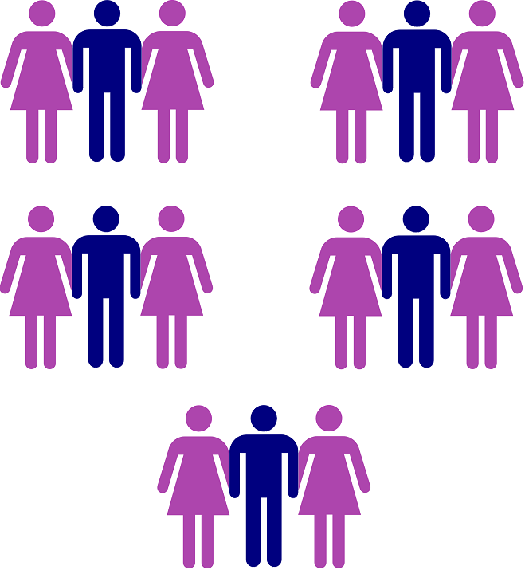
Теперь рассмотрим другой класс в котором две девочки и один мальчик
Запишем отношение двух девочек к одному мальчику:
2 : 1
Преобразуем данное отношение в дробь:

Выполнив деление в этой дроби, мы снова получим 2. То есть две девочки так будут относиться к одному мальчику, что на этого одного мальчика будут приходиться две девочки:
Можно сделать вывод, что отношение пропорционально отношению  . Поэтому оно и читалось как «десять так относится к пяти, как два относится к одному».
. Поэтому оно и читалось как «десять так относится к пяти, как два относится к одному».
В нашем примере десять девочек так относятся к пяти мальчикам, как и две девочки относятся к одному мальчику.
Пример 2. Рассмотрим отношение 12 девочек к 3 мальчикам
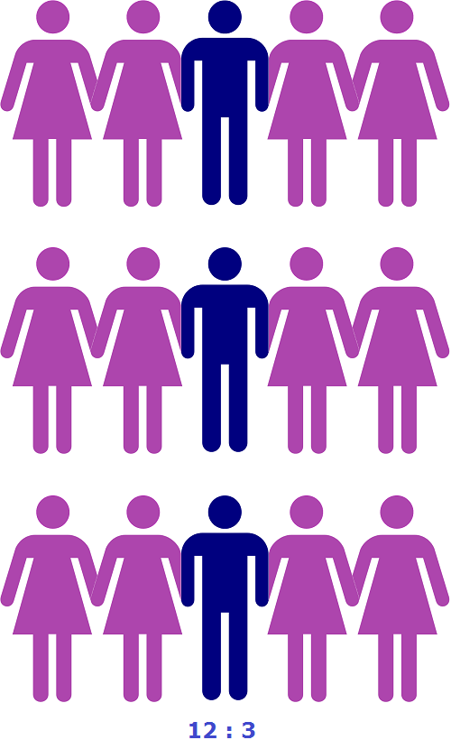
а также отношение 12 девочек к 2 мальчикам
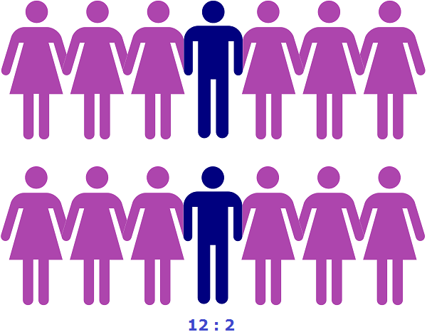
Данные отношения не являются пропорциональными. Другими словами, мы не можем записать, что
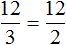
, поскольку первое отношение, как видно на рисунке показывает, что на одного мальчика приходятся четыре девочки, а второе отношение показывает, что на одного мальчика приходятся шесть девочек.Поэтому отношение
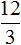
не пропорционально отношению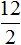
.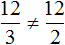
Из рассмотренных примеров видно, что пропорция составляется из дробей. Первая рассмотренная нами пропорция состоит из двух дробей. Если выполнить деление в этих дробях, то получим, что 2=2. Понятно, что 2 равно 2.
Вторая рассмотренная нами пропорция была . Мы пришли к выводу, что она составлена неправильно, поэтому поставили между дробями и знак не равно (≠). Если выполнить деление в этих дробях, получим числа 4 и 6. Понятно, что 4 не равно 6.
Рассмотрим пропорцию  . Данная пропорция составлена правильно, поскольку отношения и
. Данная пропорция составлена правильно, поскольку отношения и  равны между собой:
равны между собой:

Можно проверить это, выполнив деление в этих дробях, то есть разделить 4 на 2, а 8 на 4. В результате с двух сторон получатся двойки. А 2 равно 2
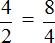
2 = 2
Все числа, находящиеся в пропорции (числители и знаменатели обеих дробей) называются членами пропорции. Эти члены подразделяются на два вида: крайние члены и средние члены.
В нашей пропорции крайние члены это 4 и 4, а средние члены это 2 и 8
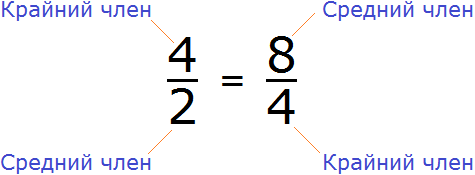
Почему крайние члены называют крайними, а средние средними? Если записать пропорцию не в дробном, а в обычном виде, то сразу станет всё понятно:
4 : 2 = 8 : 4
Числа 4 и 4 располагаются с краю, поэтому их назвали крайними, а числа 2 и 8 располагаются посередине, поэтому их назвали средними:
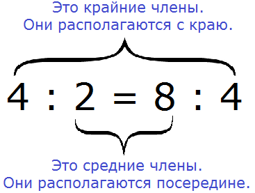
С помощью переменных пропорцию можно записать так:
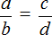
Данное выражение можно прочесть следующим образом:
a так относится к b, как c относится к d
Смысл данного предложения уже понятен. Речь идет о членах, участвующих в соотношении. a и d — это крайние члены пропорции, b и c — средние члены пропорции.
Основное свойство пропорции
Основное свойство пропорции выглядит следующим образом:
Произведение крайних членов пропорции равно произведению её средних членов.
Мы знаем, что произведение это ни что иное, как обычное умножение. Чтобы проверить правильно ли составлена пропорция, нужно перемножить её крайние и средние члены. Если произведение крайних членов будет равно произведению средних членов, то такая пропорция составлена правильно.
Например, проверим правильно ли составлена пропорция . Для этого перемножим её крайние и средние члены. Легко заметить, что крайние и средние члены пропорции располагаются «крест-накрест», поэтому в умножении нет ничего сложного. Перемножаем члены пропорции «крест-накрест»:
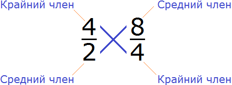
4 × 4 = 16 — произведение крайних членов пропорции равно 16.
2 × 8 = 16 — произведение средних членов пропорции так же равно 16.
4 × 4 = 2 × 8
16 = 16
4 × 4 = 2 × 8 — произведение крайних членов равно произведению средних членов. Значит пропорция составлена правильно.
Пример 2. Проверить правильно ли составлена пропорция
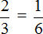
Проверим равно ли произведение крайних членов пропорции произведению её средних членов. Перемножим члены пропорции крест-накрест:
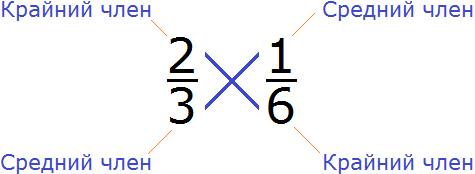
2 × 6 = 12 — произведение крайних членов пропорции равно 12
3 × 1 = 3 — произведение средних членов пропорции равно 3
2 × 6 ≠ 3 × 1
12 ≠ 3
2 × 6 ≠ 3 × 1 — произведение крайних членов пропорции НЕ равно произведению её средних членов. Значит пропорция составлена неправильно.
Поэтому в пропорции разумнее заменить знак равенства (=) на знак не равно (≠)
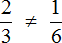